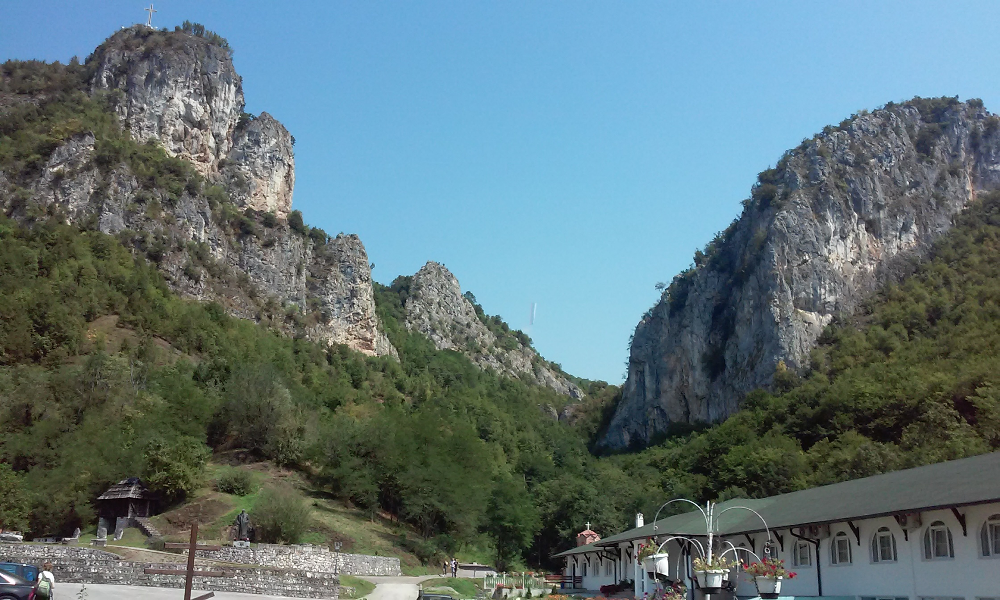
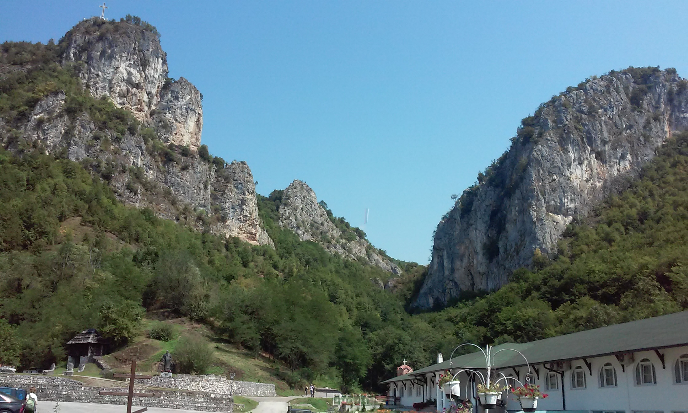

Znacaj turizma
Ovde će biti prikazane neke činjenice o turizmu pre nego što se pređe na glavnu temu!
Zbog čega je turizam bitan?
Turizam predstavlja bitan deo privrede većini svetskih država.Neke države su isključivo poznate po svojim turističkim destinacijama,konkretno zbog letovališta,ski staza,jezera, i mnogih drugih prirodnih bogatstava.Turizam je neizostavan deo čak i onih najsiromašnijih država jer se često najveća prirodna bogatstva i nalaze na tim lokacijama. Iz ovog dela možemo shvatiti da je turizam neizostavan deo svakog društva u 21.veku!

 

Kako iskoristiti turizam u pozitivne svrhe?
Često možemo biti svedoci kako ljudi svojim prisustvom uništavaju prirodu oko sebe,tako da je vrlo važno pokazati ljudima da nisu sami na ovoj planeti! Ipak,promocija nekih destinacija može dovesti i do toga da se ta mesta bolje održavaju,da se u njih ulažu novčana sredstva,da se podiže svest kod ljudi... Najbolji primer za to su mesta od važnog istorijskog značaja koja prosto ne bi mogla da opstanu bez ulaganja,održavanja,uključivanja ljudi u sav taj proces.Na žalost,mnoga mesta u Srbiji koja su od važnog značaja propadaju i tako zauvek odlaze u zaborav.Promocijom turizma i stvaranjem priče,to se može promeniti!Pominjali smo siromašne države u kontekstu prirodnih bogatstava, međutim,postoji još jedna bitna činjenica koja se ne sme zaboraviti.Promocijom turizma mogu se spasiti ljudski životi!Mnogi ljudi odlaze u Afričke zemlje i na taj način predstavljaju glas onih čiji se glas ne čuje daleko!
Kako povezati turizam i istoriju?
Turizmom,društvo ima glas koji se čuje daleko u svetu!Mnogi kažu da istoriju pišu pobednici.Samim tim prošlost može biti zauvek izmenjena i zaboravljena.Međutim,svuda oko nas, nalaze se tragovi prošlosti koji nam ukazaju na istinu i na činjenice.Istorija neke države i nekog društva može bitno promeniti stav ljudi prema narodu koji u toj državi živi.Nekada je to dobro,ali često to nije slučaj. Zato je bitno,da se ljudi trude da uvek tragaju za istinom koja je oko nas.O ovoj temi će u daljem tekstu biti više reči!
Ovde je u kratkim crtama prikazana velika slika reči 'turizam' i neke fotografije koje na prvi pogled nemaju nikakve veze sa zapadnom Srbijom,ali itekako imaju veze sa turizmom!Cilj ovog teksta je da se shvati kako turizmom možemo menjati našu starnost na bolje!
Sometimes,you have to step back and look at the bigger picture in life and you might be surprised at what you can see!
,by Pinterest! 💗